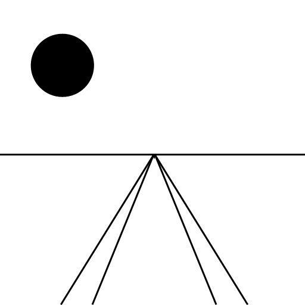

Matrices and Coloring Polygons
Last Updated 7/06/14
In this tutorial, we're going to set up a 640x480 coordinate system and while we're at it we're going to give some color to our polygon.We'll also cover a super nutshelled explaination of the OpenGL pipeline and how it turns vertices into pixels.
From LUtil.h
///Screen constants
const int SCREEN_WIDTH = 640;
const int SCREEN_HEIGHT = 480;
const int SCREEN_FPS = 60;
//Color modes
const int COLOR_MODE_CYAN = 0;
const int COLOR_MODE_MULTI = 1;
bool initGL();
/*
Pre Condition:
-A valid OpenGL context
Post Condition:
-Initializes matrices and clear color
-Reports to console if there was an OpenGL error
-Returns false if there was an error in initialization
Side Effects:
-Projection matrix is set to an orthographic matrix
-Modelview matrix is set to identity matrix
-Matrix mode is set to modelview
-Clear color is set to black
*/
void update();
/*
Pre Condition:
-None
Post Condition:
-Does per frame logic
Side Effects:
-None
*/
void render();
/*
Pre Condition:
-A valid OpenGL context
-Active modelview matrix
Post Condition:
-Renders the scene
Side Effects:
-Clears the color buffer
-Swaps the front/back buffer
-Sets matrix mode to modelview
-Translates modelview matrix to the center of the default screen
-Changes the current rendering color
*/
void handleKeys( unsigned char key, int x, int y );
/*
Pre Condition:
-None
Post Condition:
-Toggles the color mode when the user presses q
-Cycles through different projection scales when the user presses e
Side Effects:
-If the user presses e, the matrix mode is set to projection
*/
Here's our utility function again with some tweaks to the pre/post conditions and side effects. What's new is the color mode constants and handleKeys() function. The color mode
constants are just symbols we use to render our quad.
In SDL (I hear there's a good tutorial set here), events are handled with event queues. With GLUT, they are handled with callbacks. In our main() function, we'll set our handleKeys() function as a callback to handle keys.
In SDL (I hear there's a good tutorial set here), events are handled with event queues. With GLUT, they are handled with callbacks. In our main() function, we'll set our handleKeys() function as a callback to handle keys.
From LUtil.cpp
#include "LUtil.h"
//The current color rendering mode
int gColorMode = COLOR_MODE_CYAN;
//The projection scale
GLfloat gProjectionScale = 1.f;
At the top of LUtil.cpp, we have two global variables. Note: they are only global inside of LUtil.cpp.
"gColorMode" controls whether we render a solid cyan square or a multicolored square.
"gProjectionScale" controls how large of a coordinate area we want to render.
We'll cover how these variables are used in the render() and handleKeys() functions.
"gColorMode" controls whether we render a solid cyan square or a multicolored square.
"gProjectionScale" controls how large of a coordinate area we want to render.
We'll cover how these variables are used in the render() and handleKeys() functions.
From LUtil.cpp
bool initGL()
{
//Initialize Projection Matrix
glMatrixMode( GL_PROJECTION );
glLoadIdentity();
glOrtho( 0.0, SCREEN_WIDTH, SCREEN_HEIGHT, 0.0, 1.0, -1.0 );
//Initialize Modelview Matrix
glMatrixMode( GL_MODELVIEW );
glLoadIdentity();
//Initialize clear color
glClearColor( 0.f, 0.f, 0.f, 1.f );
//Check for error
GLenum error = glGetError();
if( error != GL_NO_ERROR )
{
printf( "Error initializing OpenGL! %s\n", gluErrorString( error ) );
return false;
}
return true;
}
Here's our graphics library initialization function. It's largely the same, except now we call glOrtho().
What glOrtho() does is multiply the current matrix against an orthographic (or 2D) perspective matrix with the left, right, bottom, top, near, and far values in the arguments. Here, we're setting up the coordinate system like this (similar to SDL):
Note: +Y points down and -Y points up. For those of you new to graphics programming this may seem weird, but inverted Y axis is actually pretty standard in 2D graphics programming.
Notice how we multiplied the orthographic matrix against the projection matrix. This is what the projection matrix is for, to control how we view our geometry. If we wanted 3D perspective, we'd multiply the projection matrix against the perspective matrix (done with either gluPerspective() or glFrustum()).
What glOrtho() does is multiply the current matrix against an orthographic (or 2D) perspective matrix with the left, right, bottom, top, near, and far values in the arguments. Here, we're setting up the coordinate system like this (similar to SDL):
Note: +Y points down and -Y points up. For those of you new to graphics programming this may seem weird, but inverted Y axis is actually pretty standard in 2D graphics programming.
Notice how we multiplied the orthographic matrix against the projection matrix. This is what the projection matrix is for, to control how we view our geometry. If we wanted 3D perspective, we'd multiply the projection matrix against the perspective matrix (done with either gluPerspective() or glFrustum()).
From LUtil.cpp
void update()
{
}
And once again since we have a stationary quad, we don't do much of anything in our update() function. Also, our runMainLoop() function is exactly the same.
From now on, expect to only go over relevant new code. Otherwise, these tutorials would get really repetitive really quickly.
From now on, expect to only go over relevant new code. Otherwise, these tutorials would get really repetitive really quickly.
From LUtil.cpp
void render()
{
//Clear color buffer
glClear( GL_COLOR_BUFFER_BIT );
//Reset modelview matrix
glMatrixMode( GL_MODELVIEW );
glLoadIdentity();
//Move to center of the screen
glTranslatef( SCREEN_WIDTH / 2.f, SCREEN_HEIGHT / 2.f, 0.f );
Here's the top of our rendering function. After we clear the screen, we set the current matrix mode to modelview. We do this because in our key handling function we're going to
change the projection matrix. If we don't make sure the current matrix is the modelview matrix, the projection and modelview matrix operations are going to be done incorrectly and
we'll get funky results.
The reason we need the modelview matrix is because we're going to be applying tranformations to our geometry. Where projection matrix controls how the geometry is viewed, modelview matrix tranformations control how geometry is placed in the rendering world.
Because of the way we set up our projection matrix, the origin of the scene is in the top left corner. We want our square to show up in the middle of the screen, so we translate it (or slide it) to the center of the screen using glTranslate(). glTranslate() multiplies a translation matrix against the current matrix (which in the case is the modelview matrix) so that any geometry that's rendered is translated the x, y, and z amount given in the arguments.
Another thing to note is that in every frame we load the identity modelview matrix before rendering. If we didn't, the translation transformations would accumulate. So if we translated 10 every frame, after 60 frames we would have translated 600. Eventually, we'd translate completely off the screen. Try commenting out glLoadIdentity() in this line of code and see what happens.
The reason we need the modelview matrix is because we're going to be applying tranformations to our geometry. Where projection matrix controls how the geometry is viewed, modelview matrix tranformations control how geometry is placed in the rendering world.
Because of the way we set up our projection matrix, the origin of the scene is in the top left corner. We want our square to show up in the middle of the screen, so we translate it (or slide it) to the center of the screen using glTranslate(). glTranslate() multiplies a translation matrix against the current matrix (which in the case is the modelview matrix) so that any geometry that's rendered is translated the x, y, and z amount given in the arguments.
Another thing to note is that in every frame we load the identity modelview matrix before rendering. If we didn't, the translation transformations would accumulate. So if we translated 10 every frame, after 60 frames we would have translated 600. Eventually, we'd translate completely off the screen. Try commenting out glLoadIdentity() in this line of code and see what happens.
From LUtil.cpp
//Render quad
if( gColorMode == COLOR_MODE_CYAN )
{
//Solid Cyan
glBegin( GL_QUADS );
glColor3f( 0.f, 1.f, 1.f );
glVertex2f( -50.f, -50.f );
glVertex2f( 50.f, -50.f );
glVertex2f( 50.f, 50.f );
glVertex2f( -50.f, 50.f );
glEnd();
}
Now it's time to render our square. If the color mode is cyan (which is the initial value), we want to render a solid color quad.
To set the next vertex color, we call glColor() with the red, green, and blue values. Then we set the vertex position with glVertex().
For the second time we send a vertex (as well as the third and fourth), we give no color. So the OpenGL pipeline just uses the last color value that was given. This gives our quad a solid cyan color.
You'll notice that we're making a square with a width of 100. Thanks to our projection matrix, it should be 100 pixels wide.
To set the next vertex color, we call glColor() with the red, green, and blue values. Then we set the vertex position with glVertex().
For the second time we send a vertex (as well as the third and fourth), we give no color. So the OpenGL pipeline just uses the last color value that was given. This gives our quad a solid cyan color.
You'll notice that we're making a square with a width of 100. Thanks to our projection matrix, it should be 100 pixels wide.
From LUtil.cpp
else
{
//RYGB Mix
glBegin( GL_QUADS );
glColor3f( 1.f, 0.f, 0.f ); glVertex2f( -50.f, -50.f );
glColor3f( 1.f, 1.f, 0.f ); glVertex2f( 50.f, -50.f );
glColor3f( 0.f, 1.f, 0.f ); glVertex2f( 50.f, 50.f );
glColor3f( 0.f, 0.f, 1.f ); glVertex2f( -50.f, 50.f );
glEnd();
}
If "gColorMode" is not cyan, we assume it must be multicolor.
Notice that this time, we give an individual color for each vertex. Again, it's important to give the color before you give the vertex because OpenGL looks at the most recent color value when rendering that particular vertex.
Ok so we rendered our quad. Now how does OpenGL use matrices to turn polygons into pixels? Let's use a polygon from a 3D cube as an example. Here's a (poorly drawn) cube:
First, the modelview matrix is applied to translate it/rotate it/scale it/skew it/whatever into place:
Remember back to high school art class and those perspective scenes they made you do?
What the projection matrix does is take your vertices from your polygon and multiplies them to transform them into normalized perspective coordinates that OpenGL can use:
Then it connects your polygon vertices
And starts filling in the pixels (this is called rasterization)

Obviously, there's more to the OpenGL pipeline with things to control texturing, coloring, lighting, etc. In terms of how we get from geometry to pixels, all OpenGL does is take vertex coordinates and rasterizes them into pixels with ProjectionMatrix * ModelviewMatrix * Vertex.
Notice that this time, we give an individual color for each vertex. Again, it's important to give the color before you give the vertex because OpenGL looks at the most recent color value when rendering that particular vertex.
Ok so we rendered our quad. Now how does OpenGL use matrices to turn polygons into pixels? Let's use a polygon from a 3D cube as an example. Here's a (poorly drawn) cube:
First, the modelview matrix is applied to translate it/rotate it/scale it/skew it/whatever into place:
Remember back to high school art class and those perspective scenes they made you do?

What the projection matrix does is take your vertices from your polygon and multiplies them to transform them into normalized perspective coordinates that OpenGL can use:
Then it connects your polygon vertices
And starts filling in the pixels (this is called rasterization)
Obviously, there's more to the OpenGL pipeline with things to control texturing, coloring, lighting, etc. In terms of how we get from geometry to pixels, all OpenGL does is take vertex coordinates and rasterizes them into pixels with ProjectionMatrix * ModelviewMatrix * Vertex.
From LUtil.cpp
//Update screen
glutSwapBuffers();
}
At the end of our render() function after our vertices were rasterized into pixels, we swap the front/back buffer to update the screen.
From LUtil.cpp
void handleKeys( unsigned char key, int x, int y )
{
//If the user presses q
if( key == 'q' )
{
//Toggle color mode
if( gColorMode == COLOR_MODE_CYAN )
{
gColorMode = COLOR_MODE_MULTI;
}
else
{
gColorMode = COLOR_MODE_CYAN;
}
}
At the top of a key press handling function, we check if the user presses q. If they did, we switch the square back and forth between cyan and multicolor.
From LUtil.cpp
else if( key == 'e' )
{
//Cycle through projection scales
if( gProjectionScale == 1.f )
{
//Zoom out
gProjectionScale = 2.f;
}
else if( gProjectionScale == 2.f )
{
//Zoom in
gProjectionScale = 0.5f;
}
else if( gProjectionScale == 0.5f )
{
//Regular zoom
gProjectionScale = 1.f;
}
//Update projection matrix
glMatrixMode( GL_PROJECTION );
glLoadIdentity();
glOrtho( 0.0, SCREEN_WIDTH * gProjectionScale, SCREEN_HEIGHT * gProjectionScale, 0.0, 1.0, -1.0 );
}
}
At the bottom of a key handling function, we check if the user pressed e. If they did, we cycle through the various project scales.
Those of you that really know your linear algebra are probably thinking "Can't we just multiply a scaling matrix against the projection matrix?". The answer is yes, and we'll be covering making transformation to the projection matrix in the scrolling tutorial.
- 100% scale: default
- 200% scale: we render an area twice as large so everything is smaller
- 50% scale: we render an area half as large so everything is close up and bigger
Those of you that really know your linear algebra are probably thinking "Can't we just multiply a scaling matrix against the projection matrix?". The answer is yes, and we'll be covering making transformation to the projection matrix in the scrolling tutorial.
From main.cpp
int main( int argc, char* args[] )
{
//Initialize FreeGLUT
glutInit( &argc, args );
//Create OpenGL 2.1 context
glutInitContextVersion( 2, 1 );
//Create Double Buffered Window
glutInitDisplayMode( GLUT_DOUBLE );
glutInitWindowSize( SCREEN_WIDTH, SCREEN_HEIGHT );
glutCreateWindow( "OpenGL" );
//Do post window/context creation initialization
if( !initGL() )
{
printf( "Unable to initialize graphics library!\n" );
return 1;
}
//Set keyboard handler
glutKeyboardFunc( handleKeys );
//Set rendering function
glutDisplayFunc( render );
//Set main loop
glutTimerFunc( 1000 / SCREEN_FPS, runMainLoop, 0 );
//Start GLUT main loop
glutMainLoop();
return 0;
}
Our main() function is pretty much the same as before, only now we use glutKeyboardFunc() to set our keyboard handler callback.